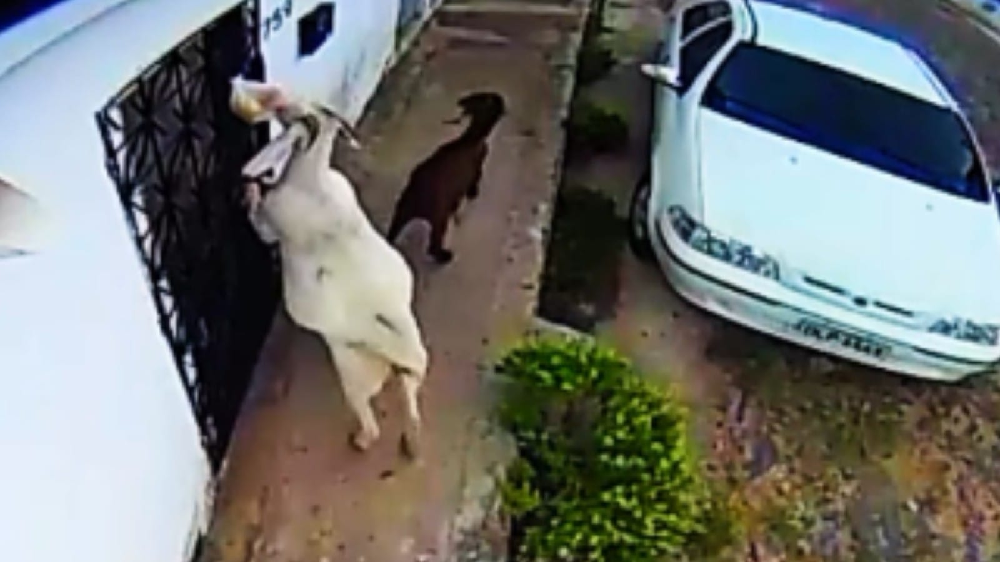

Gangues de cabras volta a furtar pães na porta de casa no Ceará
Caso ocorreu em Boa Viagem, no sertão cearense. No vídeo, os animais aparecem comendo os pães que acabaram de ser entregues em uma residência.
Redação Produzida por Eletro 1 — 26/05/2025
A “Gangue das cabras” foi novamente flagrada furtando pães em Boa Viagem, no interior do Ceará. As cabras retiram o alimento do café da manhã que o padeiro deixa na porta das residências, após aprenderem uma técnica de furto.
Essa foi a segunda vez que o “delito” das cabras foi flagrado por câmeras de segurança. A primeira vez foi em abril, quando a dona de casa Sandra Maria instalou câmeras de segurança para descobrir o paradeiro dos pães desaparecidos.
Após a instalação dos equipamentos de segurança, ela descobriu os verdadeiros ladrões.
As cabras adoram o pão quentinho das manhãs.